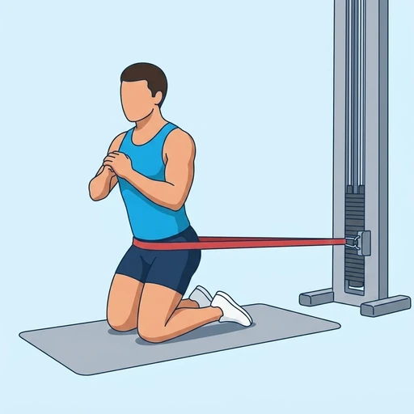
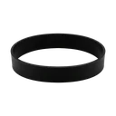

Banded Kneeling Hip Thrust
This exercise strengthens the glutes and hamstrings by driving the hips forward against band resistance from a kneeling position.
Upper legs · Loop Band · Beginner


Muscles worked by the Banded Kneeling Hip Thrust
Primary
Secondary
Also called: glute, glutes, gluteus maximus, buttocks, butt.
Equipment

Loop BandAlso called: mini band, hip band, booty band, fabric band, glute band, mini loop band.
How to do the Banded Kneeling Hip Thrust
- Place a loop band just above your knees. Kneel on the floor with your torso upright and knees hip-width apart.
- Lean slightly forward from your hips, keeping your back straight and core braced.
- Initiate the movement by squeezing your glutes, driving your hips forward until your torso is upright.
- Squeeze your glutes hard at the top, maintaining tension on the band.
- Slowly reverse the movement, controlling the band's resistance as you return to the starting position.
Form tips
- Focus on a strong glute contraction at the top of the movement.
- Keep your core engaged throughout to prevent arching your lower back.
- Maintain constant tension on the band by pushing your knees slightly outwards.
At a glance
| Body part | Upper legs |
|---|---|
| Category | Strength |
| Force type | Push |
| Mechanic | Compound |
| Difficulty | Beginner |
| Equipment | Loop Band |
| Goals | Hypertrophy |
| Tags | Leg day, Glute focus |
| MET | 6.0 (metabolic equivalent, for calorie estimates) |
| Unilateral | No |
| Bodyweight | No |
| Dataset id | banded-kneeling-hip-thrust |
Banded Kneeling Hip Thrust in German & Spanish
| German | Kniender Hüftstoß mit Band |
|---|---|
| Spanish | Empuje de Cadera Arrodillado con Banda |
Descriptions, instructions and tips ship in all three languages in the JSON.
Related exercises
Exercise data (JSON)
The record below is exactly what exercises.json ships for this exercise — names, descriptions, instructions and tips in English, German and Spanish.
{
"id": "banded-kneeling-hip-thrust",
"name_en": "Banded Kneeling Hip Thrust",
"name_de": "Kniender Hüftstoß mit Band",
"name_es": "Empuje de Cadera Arrodillado con Banda",
"description_en": "This exercise strengthens the glutes and hamstrings by driving the hips forward against band resistance from a kneeling position.",
"description_de": "Diese Übung stärkt Gesäß und hintere Oberschenkelmuskulatur, indem du die Hüften aus kniender Position gegen Bandwiderstand vorwärts stößt.",
"description_es": "Este ejercicio fortalece los glúteos y los isquiotibiales al impulsar las caderas hacia adelante contra la resistencia de una banda desde una posición arrodillada.",
"category": "strength",
"force_type": "push",
"mechanic": "compound",
"difficulty": "beginner",
"equipment": "loop_band",
"body_part": "upper_legs",
"primary_muscles": [
"gluteus_maximus"
],
"secondary_muscles": [
"hamstrings"
],
"goals": [
"hypertrophy"
],
"tags": [
"leg_day",
"glute_focus"
],
"variation_group": "hip-thrust",
"is_unilateral": false,
"is_bodyweight": false,
"instructions_en": [
"Place a loop band just above your knees. Kneel on the floor with your torso upright and knees hip-width apart.",
"Lean slightly forward from your hips, keeping your back straight and core braced.",
"Initiate the movement by squeezing your glutes, driving your hips forward until your torso is upright.",
"Squeeze your glutes hard at the top, maintaining tension on the band.",
"Slowly reverse the movement, controlling the band's resistance as you return to the starting position."
],
"instructions_de": [
"Platziere ein Loop-Band knapp über deinen Knien. Knie dich auf den Boden, Oberkörper aufrecht, Knie hüftbreit auseinander.",
"Lehne dich leicht aus den Hüften nach vorne, halte den Rücken gerade und den Rumpf angespannt.",
"Beginne die Bewegung, indem du die Gesäßmuskeln anspannst und die Hüften nach vorne stößt, bis dein Oberkörper aufrecht ist.",
"Spanne die Gesäßmuskeln oben fest an und halte die Spannung auf dem Band.",
"Kehre die Bewegung langsam um und kontrolliere den Widerstand des Bandes, während du in die Startposition zurückkehrst."
],
"instructions_es": [
"Coloca una banda de bucle justo por encima de tus rodillas. Arrodíllate en el suelo con el torso erguido y las rodillas separadas al ancho de las caderas.",
"Inclínate ligeramente hacia adelante desde las caderas, manteniendo la espalda recta y el core contraído.",
"Inicia el movimiento apretando los glúteos, impulsando las caderas hacia adelante hasta que tu torso esté erguido.",
"Aprieta los glúteos con fuerza en la parte superior, manteniendo la tensión en la banda.",
"Invierte lentamente el movimiento, controlando la resistencia de la banda mientras regresas a la posición inicial."
],
"tips_en": [
"Focus on a strong glute contraction at the top of the movement.",
"Keep your core engaged throughout to prevent arching your lower back.",
"Maintain constant tension on the band by pushing your knees slightly outwards."
],
"tips_de": [
"Konzentriere dich auf eine starke Gesäßkontraktion am oberen Punkt der Bewegung.",
"Halte den Rumpf während der gesamten Übung angespannt, um ein Hohlkreuz zu vermeiden.",
"Halte das Band ständig unter Spannung, indem du die Knie leicht nach außen drückst."
],
"tips_es": [
"Concéntrate en una fuerte contracción de los glúteos en la parte superior del movimiento.",
"Mantén el core activado en todo momento para evitar arquear la espalda baja.",
"Mantén una tensión constante en la banda empujando las rodillas ligeramente hacia afuera."
],
"met": 6.0,
"images": {
"flat": {
"start": "images/flat/banded-kneeling-hip-thrust-start.webp",
"peak": "images/flat/banded-kneeling-hip-thrust-peak.webp"
}
}
}Fetch just this exercise
const { exercises } = await fetch(
"https://exercise-dataset.com/exercises.json"
).then(r => r.json());
const ex = exercises.find(e => e.id === "banded-kneeling-hip-thrust");Free for personal and commercial in-app use with attribution (“Exercise data by RepDB”) — see the license and ready-made attribution snippets. Redistributing the data as a dataset or API is not permitted.